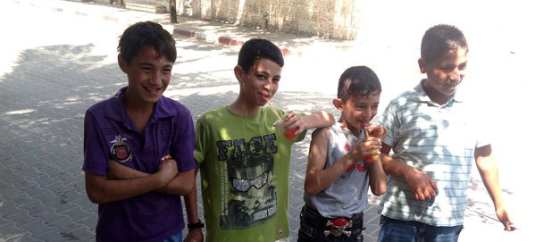
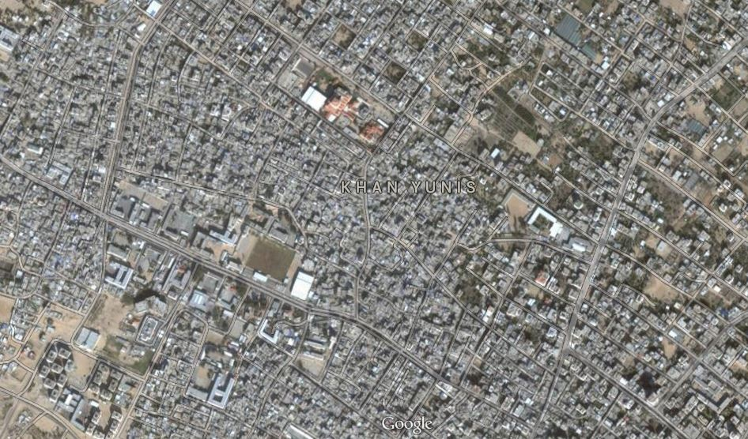
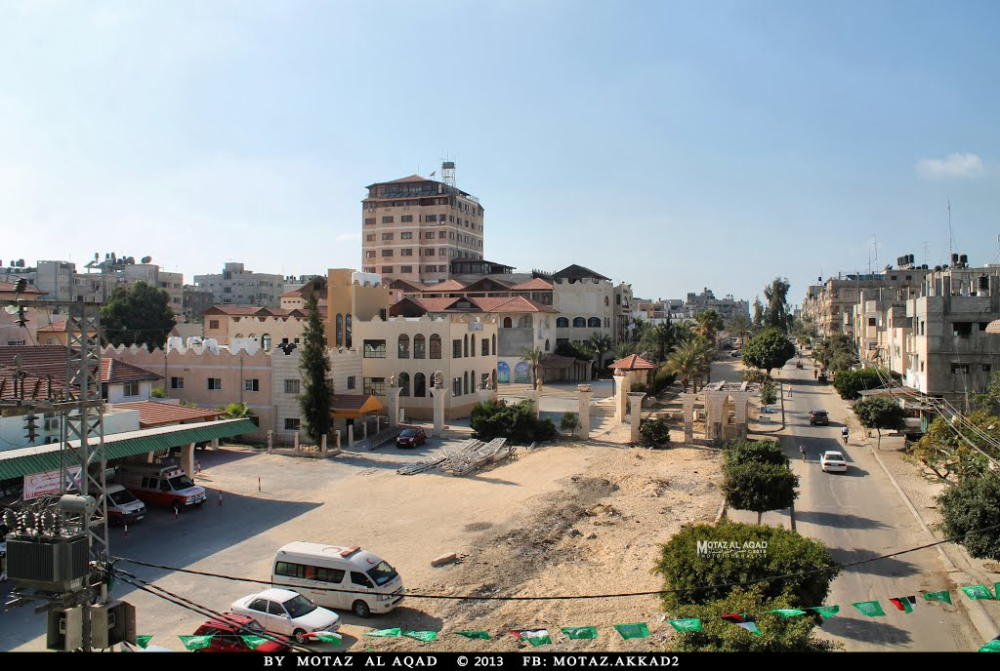
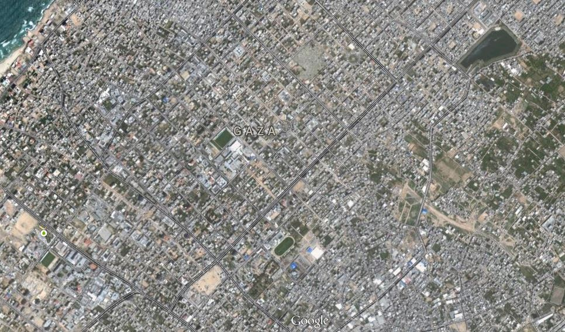
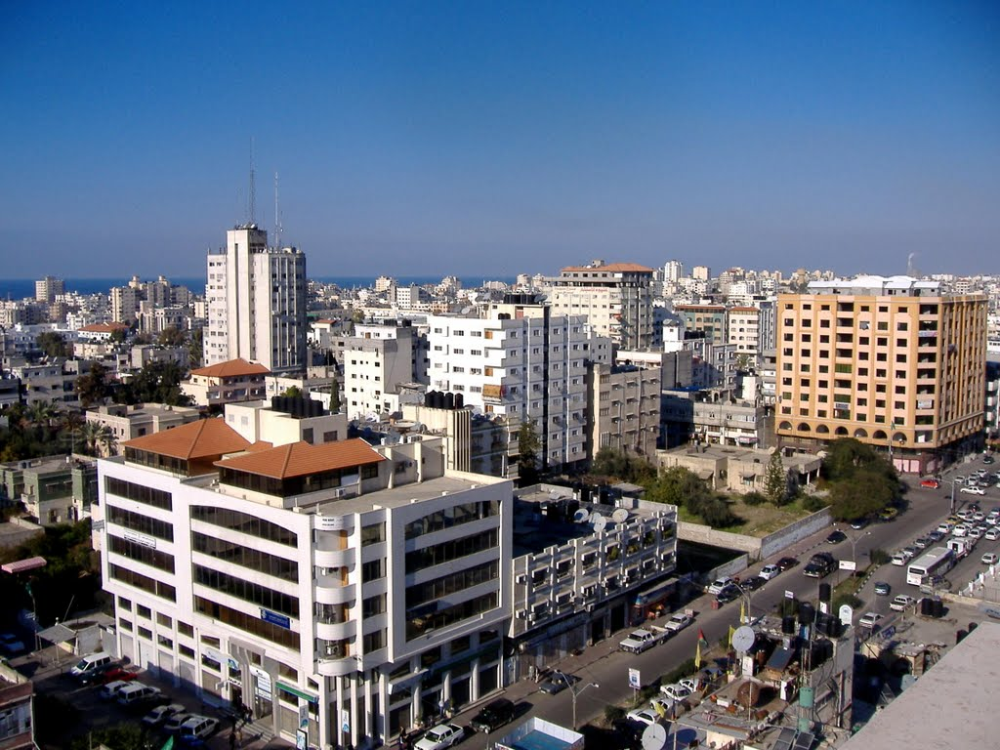
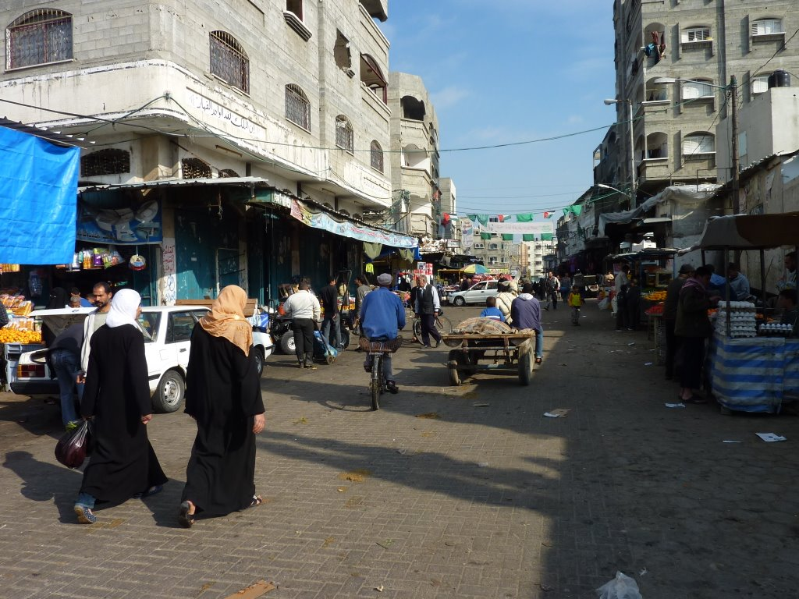
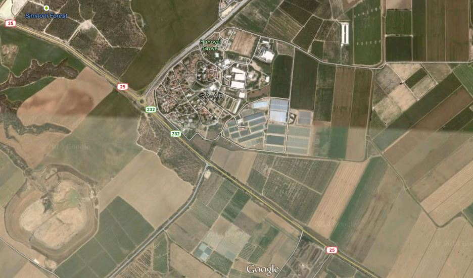
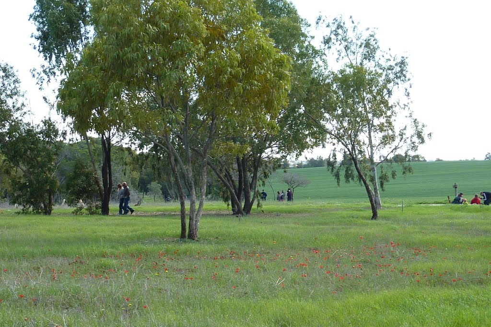
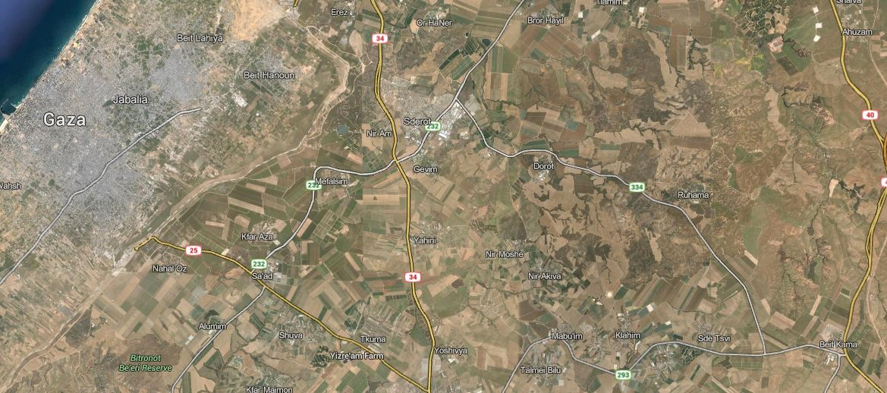
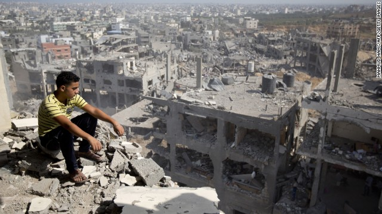

utenstat.no
utenstat.noStemningsbilder fra Gaza
13. august 2014 | Sondre Bjellås
Alle medier har en agenda, også bloggere. Jeg har en agenda med denne bloggen, og det er å spre informasjon og budskap om ikke-voldelig og frivillighets-basert samhold mellom mennesker. Jeg liker fakta og jeg liker å ha rett. Hvis jeg tar feil, så liker jeg veldig godt å bli lært og fortalt riktig.

Jeg tror ikke på vold, jeg tror på frivillighet. Mange anser meg å være en liberalist, men jeg er ingen liberalist i en klassisk forstand. Prinsippene for frivillighet, er ikke kompatible med vanlig liberalisme. De liberale ønsker en sterk stat, en som har de aller største våpnene. Forskjellen mellom en sosialist og liberalist, er bare en grad av forskjell. Forskjellen mellom meg og disse, er av en helt annen dimensjon. Nå er selvsagt liberalister ikke en spesielt homogen gruppe, så det er ikke mye man egentlig kan generalisere om disse individene.
Krig er det verste som finnes, det skaper mange offer som blir ødelagt for resten av sine liv, og det ødelegger for mange fremtidige generasjoner. Det er aldri noe positivt som kommer fra en krig. Derfor er det ikke fornuftig å ta side i en krigskonflikt.
En god del liberalister i Norge, tar side med Israel i konflikten mellom Palestina og Israel. Et argument jeg har hørt tidligere, er at Israel har en rett til å bombe Palestina fordi Israel er et mer liberalistisk, eller «fritt» land. Ja, noen mener det er akseptabelt at uskyldige liv går tapt bare fordi Israel er et land som har mer frihet til sine innbyggere, enn Palestina. Lignende argumenter har blitt brukt for å unnskyldige de evige krigene som USA har startet.
En som mener at Israel har en rett til å bombe sivile i Palestina, er liberalisten Onar Åm.
Hvorfor skriver jeg dette innlegget? Kun for å vise at alle har en agenda, og ikke alle er redelige om sin agenda. Onar mente kanskje det var balansert å vise frem noen stemningsbilder fra Gaza, for å «motbevise» pressens påstand om at Gaza er et tett befolket sted. Han velger selvsagt kun bilder som støtter sitt syn, slik mange også velger statistikk og vinkling av saker slik at det dekker vårt syn og vår agenda.
Jeg kan gjøre det samme, fullstendig «motbevise» hva Onar gjør. La oss se.
Det er 8 byer i Gaza, kun to av dem har over 100 000 innbyggere. La oss sjekke Khan Yunis som hadde ~180 000 innbyggere i 2006.


Dette kan ikke stemme? Dette er absolutt ikke den virkeligheten man kan bli forledet til å tro eksisterer, hvis man skal lytte til hva Onar Åm skriver?
La oss ta en rask titt på Gaza-by, dette området er mye større enn byen ovenfor.


Her er et bilde fra en annen by.

Hvis vi dermot går over grensen, til Israel, vil man fort se at landet stort sett består av store åkre. Store ubebodde områder, hvor de fleste raketter som Hamas skyter opp, lander.


Men nå velger jeg bare noe vilkårlig område som støtter mitt budskap, eller?
La oss se lengre ut på Google Maps, se hvordan det virkelig ser ut fra høyden.

Det vi kan se her, er at Gaza-by er et veldig tett bebodd område sammenlignet med store deler av Israel.
Man må se på fakta i denne saken, det eksisterer en enkel måte å sjekke befolkningstettheten. Antallet folk delt på landområde.
Israel har tetthet på 964 mennesker pr. kvadrat engelsk mil. India som mange anser som å være et tett befolket land, har 983. Nederland har 1051. Norge har til sammenligning 35 og Danmark 336.
(Kilde: Wikipedia)
Så hva er befolkningstettheten på Gaza-stripen?
Den er 13 069!
Den er på over 13 tusen, Det er over 13 ganger mer enn Israel og India. Eller i vårt tallsystem, så blir det 5046 mennesker pr. km². Det er nesten samme tetthet som Oslo, som har 5221,6 innbyggere pr. km².
Kanskje folk som leser dette vil få litt bedre forståelse av hvordan det ville vært å opplevd dette midt i Oslo sentrum? Jeg vil ikke dele noe annet «stemningsbilde» fra nyere tid fra Gaza enn bildet nedenfor av ødeleggelsene. Det er så enormt mye vondt som skjer i Gaza at jeg ikke klarer å dele det her.

(Bilde: CNN)
Jeg var få hundre meter fra bomben som gikk av 21. juli 2011 i Oslo, jeg falt nesten i bakken av sjokkbølgen. Mennesker som aksepterer krigføring på denne måten, har manglende vilje til å sette seg inn i det helvete som uskyldige opplever og de traumene de må leve med resten av sine liv. Det vil påvirke generasjoner på generasjoner, og levesituasjonen til folket vil holdes tilbake i mange årtier.
Onar Åm mener at Hamas bruker menneskelige skjold fordi de opererer midt i byene, men det samme argumentet kan brukes mot Israel, at Israel med intensjon dreper mange sivile for å skape frykt, fortvilelse, sinne og tap blant de sivile. Kanskje de håper at dette sinnet vil rettes mot Hamas, men det vil det nok ikke.
«Det er også logisk at dette gjøres for å vinne en propagandakrig. Med en objektiv og nøytral presse ville en slik strategi vært umulig.» – Onar Åm
Det finnes ingen objektiv eller nøytral presse, hvertfall ikke noen presse på Gaza eller Israel. Det kan virke som det er mangel på objektive og nøytrale bloggere i vår del av verden også.
«Men pressen gjør faktisk noe så utrolig som å aktivt spille på lag med Hamas ved å rapportere åpenbare løgner slik som at “Hamas er et av verdens tettest befolkede områder” og at “folk har ingen sted å flykte.” Alt som trengs er en liten kikk på Google Earth så skjønner du at dette ikke bare er usant, men det er en grov løgn. Det aller meste av Gaza er relativt folketomt og det er mange plasser for sivilbefolkningen å flykte til i gåavstand fra byene.» – Onar Åm
Her gjør Onar Åm en logisk feilslutning som mange andre også gjør, nemlig å likestille det palestinske folket som bor på Gaza-stripen, med Hamas. Dette er propaganda på sitt verste, man forsøker å lage paraleller mellom de sivile og dets ledere, slik at folket blir gjort delaktig i handlingen og dermed også aksepterte offere i konflikten.
Samt at han forsøker å få oss til å tro at det er mulig for et relativt sivilisert folk å bare pakke sine saker og dra ut i ørken og bo der i mange uker – fullstendig uten infrastruktur.
Hvem er skyldig i en grov løgn? Hvem bør skamme seg? Jeg håper i det minste at noen lærer hva som er riktig, og hva som er galt i spørsmålet om folketetthet.
Mitt råd er å ha sunn skepsis til at man leser, spesielt hvis dette er noe en politiker har skrevet. Politikere er individer som er godt trente i å spinne historier til å passe sin egen agenda, og det gjelder selvsagt også politikeren, Onar Åm.
(Foto av guttene tatt av Ali Abunimah)